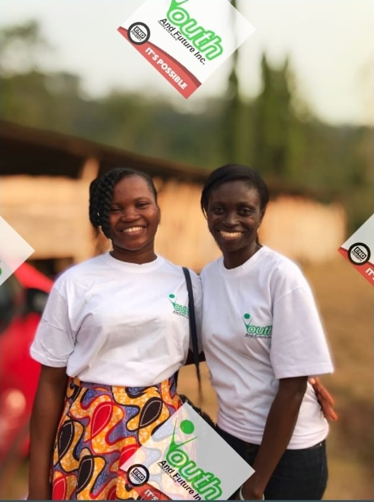
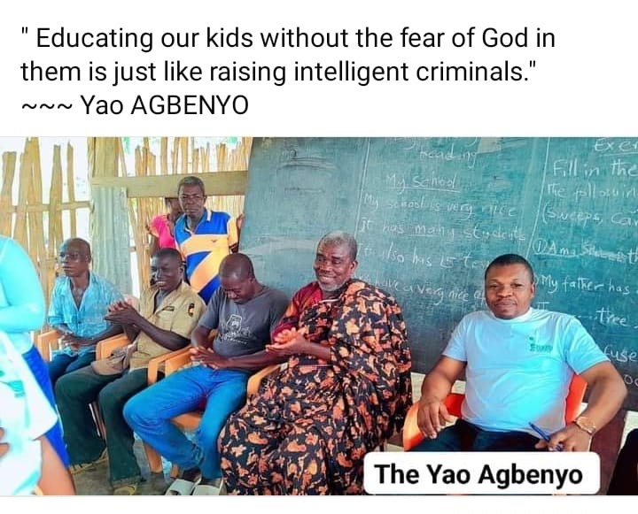

Global reach. Rural roots.
To become a leading name in global and rural youth empowerment.
For almost fifteen years, YAFInc has been creating room for young people to discover their voice, build their capacity and lead change that reaches far beyond themselves.


Youth and Future Incorporated is a Ghanaian non-governmental, non-profit organization guided by the belief that education and good health are foundations for a thriving future. Education creates pathways to leadership and capacity building; good health makes every other possibility worth pursuing.
From rural Ghana to the country’s most urban centres, we bring young people together through workshops, bootcamps, career guidance, entrepreneurship initiatives and pan-African conversations.
To become a leading name in global and rural youth empowerment.
We create experiences and networks that help young people lead with purpose and serve their communities.
Because wellbeing is essential to every young person’s opportunity to flourish.
Because learning opens possibilities and grows the leaders our future needs.
Give your gifts, knowledge and energy to a future that is bigger than you.